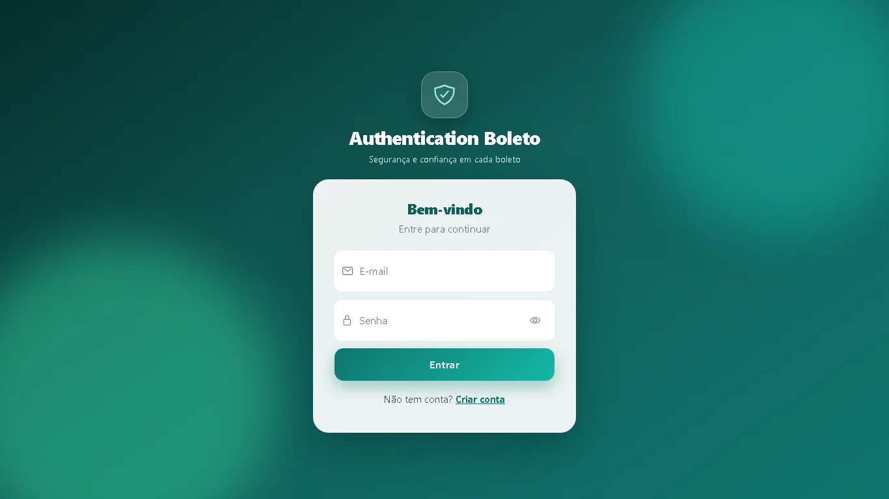
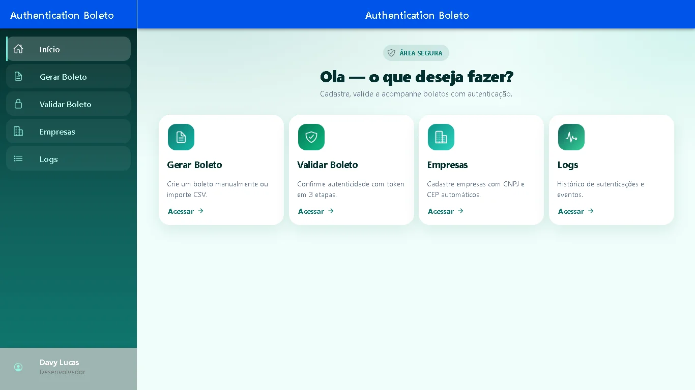
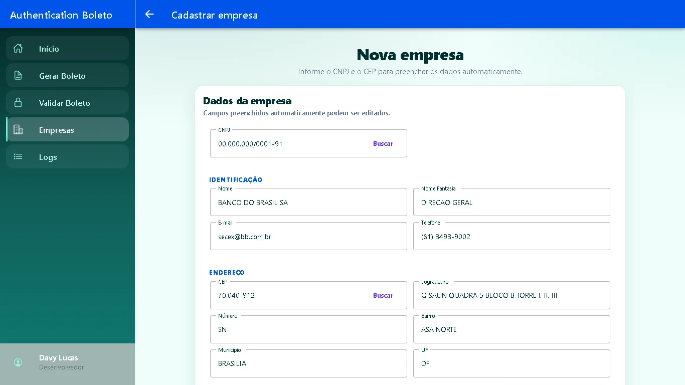
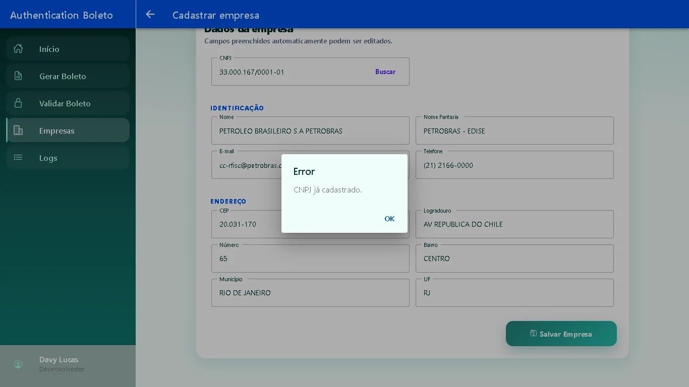
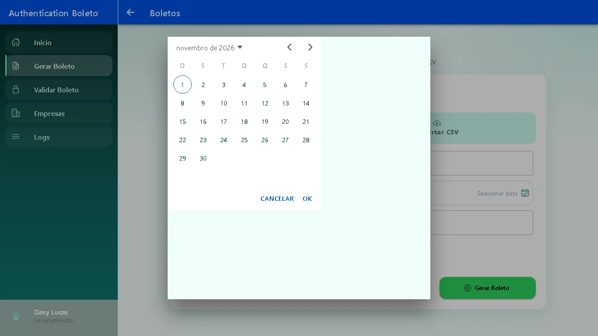
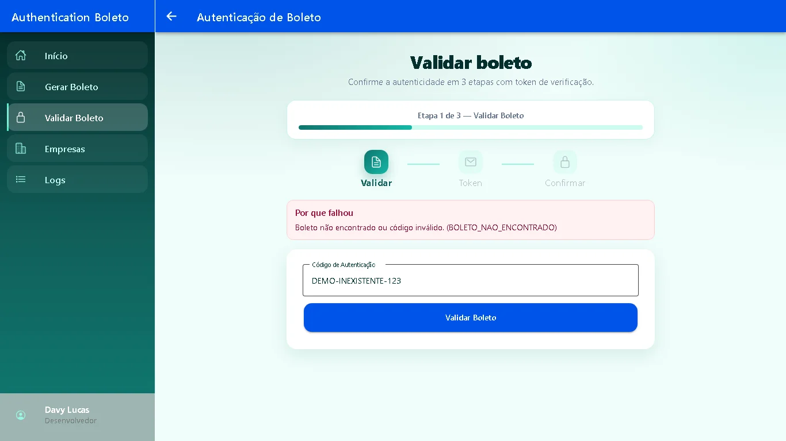
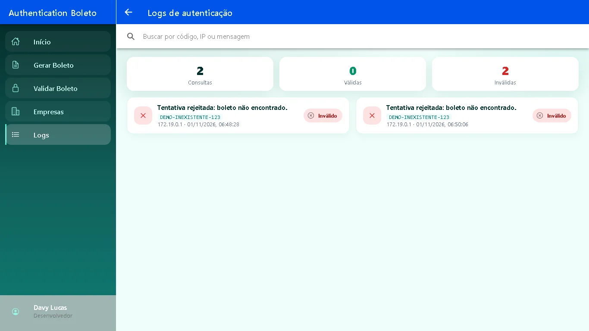
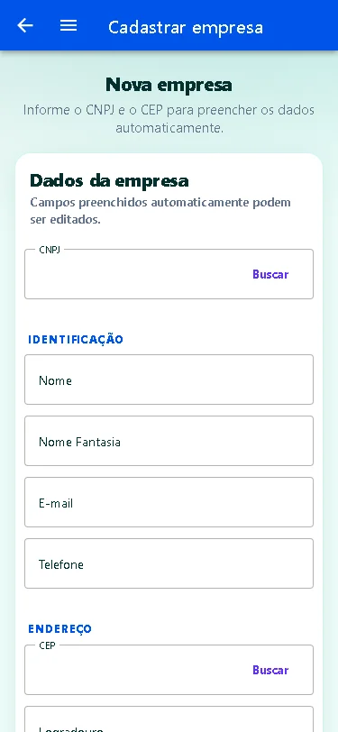

Authentication-Boleto
2FA para validação de boletos contra fraude, para PMEs e fintechs: antes de confirmar um pagamento, o sistema envia um código de verificação por e-mail.
Ver repositórioComo rodarProblema
Boletos adulterados trocam o código de barras ou o beneficiário e desviam o pagamento. O Authentication-Boleto confere o boleto com a empresa cadastrada e exige um código de verificação antes da confirmação.
Stack
| Backend | Java 17, Spring Boot 3.3, JWT, dois serviços: auth (8080) e batch (8082), integrados por Feign |
| Mensageria | RabbitMQ para o processamento de lotes de boletos via CSV |
| Banco | PostgreSQL |
| Frontend | Ionic 8, Angular 17 e Capacitor, servido por nginx |
| Infra | Docker Compose (postgres, rabbitmq, mailpit, auth, batch, frontend) |
Destaques técnicos
- 2FA por e-mail: código de verificação enviado por SMTP; no compose, o Mailpit captura os e-mails para demonstração.
- JWT stateless: o batch repassa o token do usuário quando chama o auth.
- Contrato de erro padronizado: respostas com code, details e traceId; validações retornam 400.
- Upload em lote: CSV publicado no RabbitMQ e processado de forma assíncrona.
- Testes unitários com JUnit e Mockito nos dois serviços.
Telas
Capturas do ambiente local, com dados fictícios.







